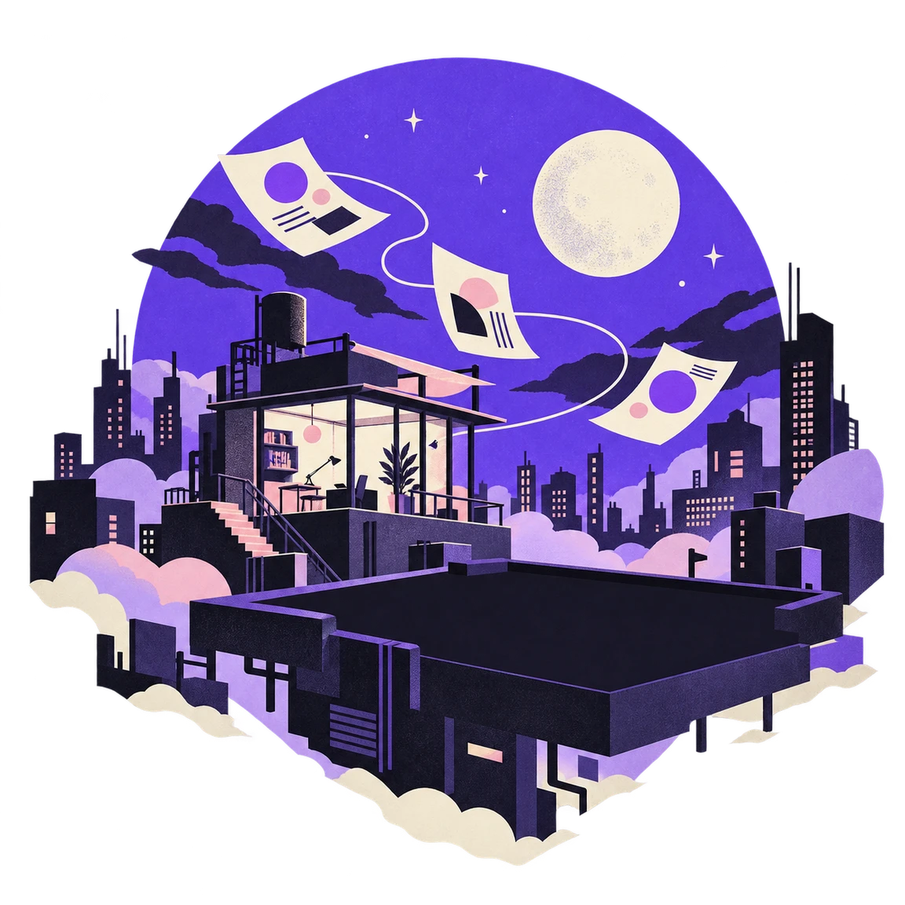

AI teammates for work and imagination.
Your work.
In motion.
Automate the routine. Make room for the creative. Give your teammates a goal, and build a workflow that moves ideas forward.
In development. Open source. Built for your machine.

What can we take off your list?Less busywork.
More of your best work.
One goal.
A team to move it forward.
From a brief
to a shared workflow.
Build a team around the way you work. One teammate gathers the details, another shapes the idea, and another brings it to a canvas. Explore the workflow we’re building.
One brief. A few capable teammates.
Explore a Tokyo-night poster with a simple animated motif.
Continue the handoff. This is a scripted preview of planned workflows.
Teammates that pass useful context forward, so you don’t have to repeat the brief.
Look under the hoodMemory & efficiency, by design
Keep the context.
Lose the repetition.
Great teammates remember the decisions behind the work. Mawl’s memory system is designed to carry useful context forward, while keeping each model’s working context focused.
- Remember what matters
- Project facts, preferences, past decisions, and reusable skills—designed to be recalled when they help, with memory you can inspect and edit.
- Make your tokens count
- Reusable prompt prefixes support caching. Selective recall and compact handoff notes are designed to reduce repeated context and unnecessary token use.
- Keep the work connected
- The collaboration roadmap connects teammates through focused messages and shared handoffs, instead of making you carry every detail between them.
Cache-aware prompt foundations are built. Long-term memory and teammate messaging are on the roadmap. Token usage depends on your model and workload.
A little universe.
On your machine.
Give your teammates a home alongside your work. Choose the models you want, keep your conversations locally, and make the space your own.
Use an online provider when you need it, or connect a local model through Ollama. You decide where the thinking happens.
Get to know your spaceCan I use Mawl today?
Mawl is in active development. The desktop foundation, conversations, teammate roles, and provider connections are taking shape. Explore the repository for setup instructions and the latest working state. A polished public release is still ahead.
Do I have to use one AI model?
No. Mawl supports multiple providers, including OpenAI, Anthropic, OpenRouter, compatible APIs, and local models through Ollama. Availability depends on your provider and setup. Provider usage may have its own costs.
Does everything stay on my computer?
Mawl stores your conversations on your machine. If you choose an online model, the context used to generate a reply goes to that provider. Choose a local model through Ollama when you want the model to run locally too.
What can teammates make on a canvas?
The planned canvas workspace turns a brief into a live design beside the conversation: mockups, front-end sites, graphics, and later animated compositions. The vision includes previews, revisions, and exportable work. The animated poster in this page is an illustrative example.
Can teammates communicate with each other?
That’s part of the collaboration roadmap: teammates pass focused requests and useful context between roles. A research teammate could hand findings to a writer, who hands a brief to a designer. The handoffs in this preview are scripted, rather than live agent communication.
What’s still growing?
Workflow automation, teammate-to-teammate messaging, long-term memory, and canvases are on the roadmap. Canvases start with mockups, sites, and graphics; dedicated motion compositions and video export come later. The examples above and the film illustrate that direction.
Build your team.
Make space to create.
Your workflows. Your creative process. A team that’s yours.
Explore Mawl on GitHubMade with care. Still growing.